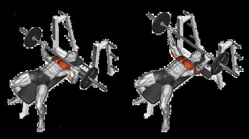
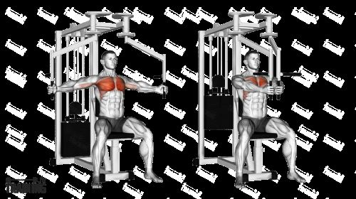

Guide to Training Chest
Home About Pictures Contact Us
Introduction
The chest or pectorals are one of the key muscle groups of the human body. This muscle group is used in mainly "pushing movements", or movements that involve exerting force in front of oneself. The effort of growing one's chest can usually lead to muscle gains in other areas due to the pushing movement involving other muscles like triceps and core. There are a plethora of effecient chest exercises that can help you grow chest substantially.
Exercises
The chest muscles are actually layered, and the layers stretch in different directions. This means different movements can target different parts of your chest. Two main movements follow an "outward" motion and an "inward-outward" motion, so the exercises follow these patterns. These different chest exercises include:
- Bench Press
- Chest Flys
- Dumbell Bench Press
- Cable Chest Flys
- Decline Press
Bench Press
Chest Fly
Weight and Gym Experience Comparisons
| Exercise | Weight(lbs) | Experience |
|---|---|---|
| Bench Press | 45 | Beginner |
| Bench Press | 95 | Intermediate |
| Bench Press | 135 | Advanced |
| Bench Press | 185 | Adept |
| Chest Fly | 30 | Beginner |
| Chest Fly | 80 | Intermediate |
| Chest Fly | 130 | Advanced |
| Chest Fly | 180 | Adept |